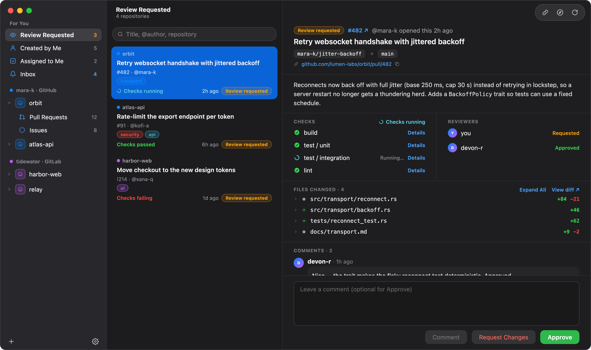
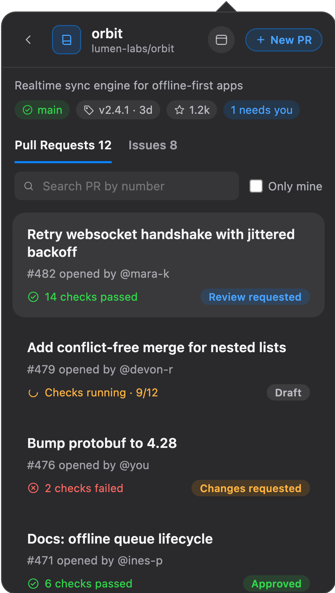
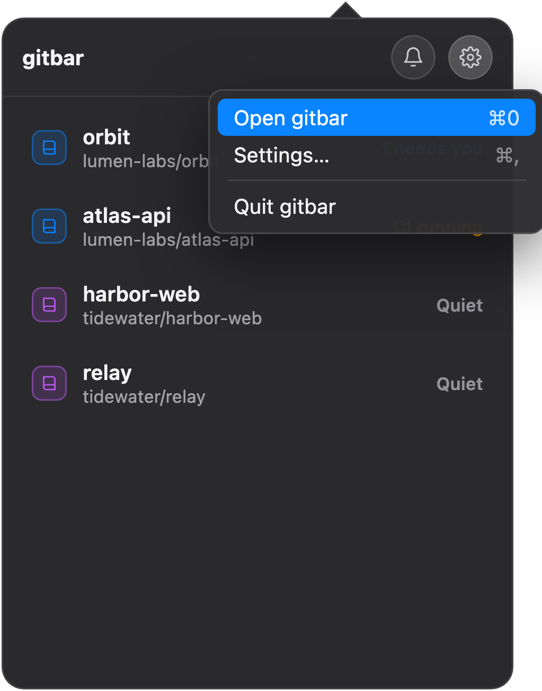
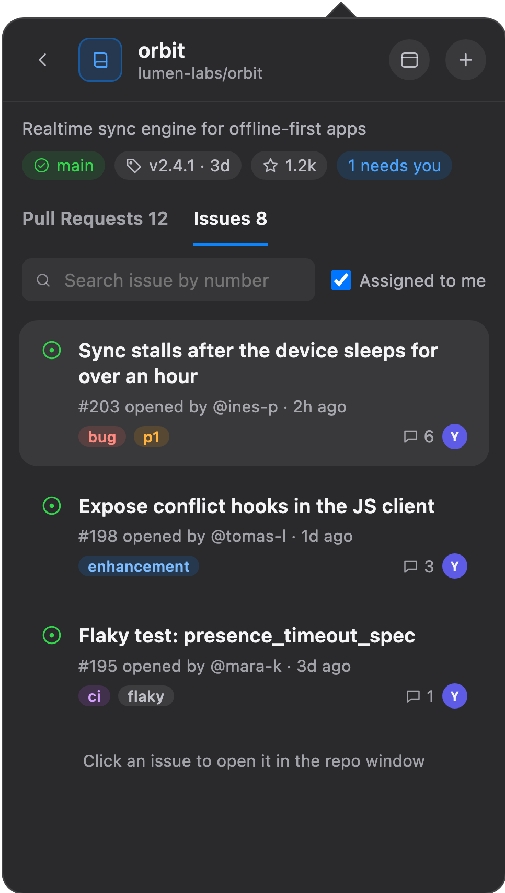
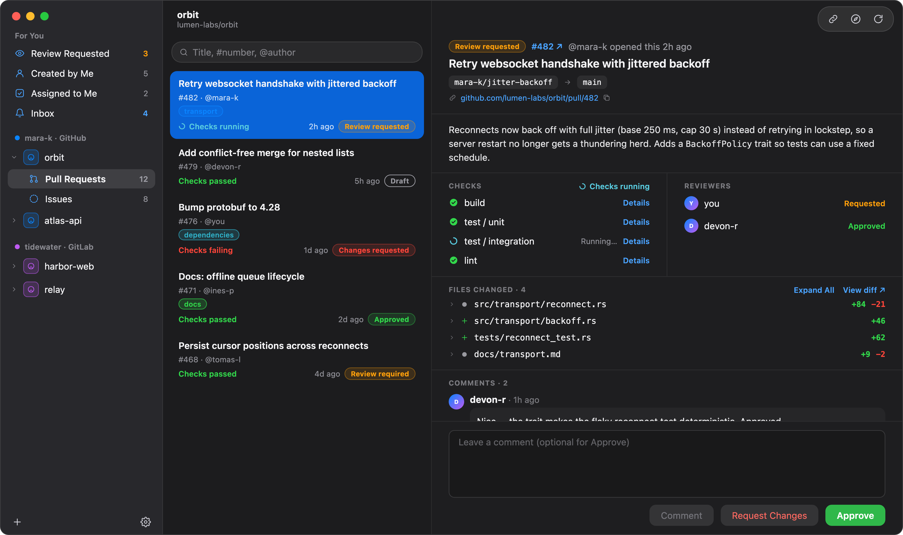
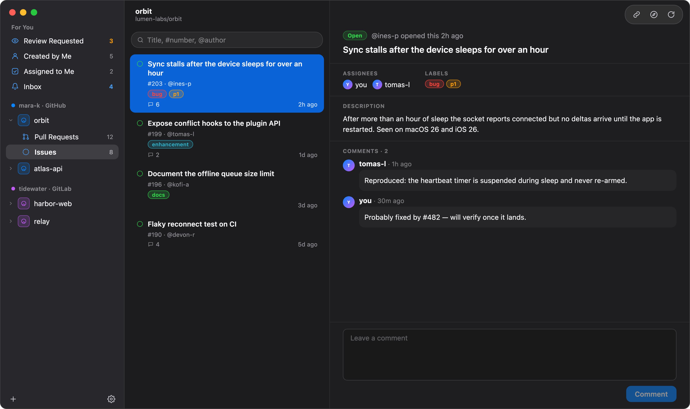
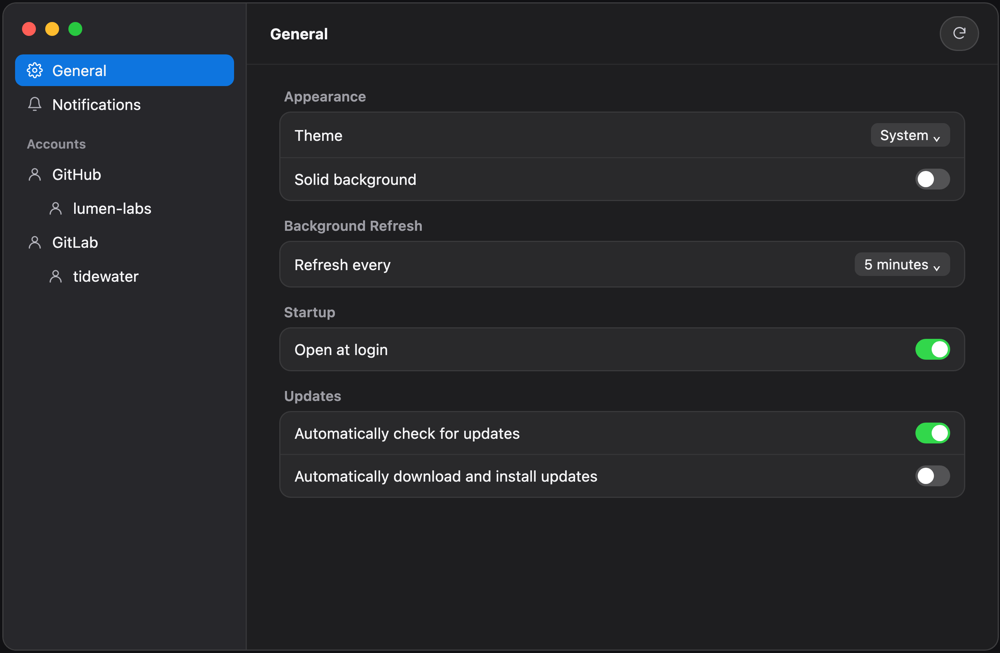

gitbar lives in your Mac's menu bar and keeps an eye on your GitHub and GitLab repos. One click shows you what needs your attention. When it's time to dig in, a full window lets you review, comment and approve without opening a single browser tab.


Click the icon and you'll see every repo you care about, with a clear status on each one. No dashboards to dig through.


When a quick glance isn't enough, open the main window. It works like Mail: pick a list on the left, a pull request in the middle, and read it all on the right.
"For You" pulls together everything waiting on you from all your repos and accounts, GitHub and GitLab together in one place.

Read the description, check CI, see who has reviewed, browse the diff and leave your review, all on one screen.

Catch up on the whole conversation and reply right there.
Tap a screenshot to see it full size.
Running checks update by themselves, so you know the moment a build passes.
Draft, approved, changes requested or waiting on you. Much more useful than a plain "Open".
Search by title or author, or type a number like #482 to jump right to it.
Get a Mac notification when someone asks for your review or mentions you. You choose what's worth a ping.
Start a new pull request from the menu bar. Your repo's template fills in the description for you.
gitbar refreshes quietly in the background and only downloads what changed, so it barely touches your API limits.
Paste a token and gitbar tells you what it can and can't do, plus how to fix anything missing.
Your tokens stay in the macOS Keychain. No gitbar servers, no tracking, no accounts to create.
Built with Apple's own tools, so it looks right at home. Light and dark mode included.
Add your GitHub or GitLab account with a personal access token, choose the repos you want to follow, and you're done. Works with self-hosted servers too.

Both give you the same free app. You need macOS 15 (Sequoia) or later.
Then connect an account: click the menu bar icon, then the gear, then Settings. Add your GitHub or GitLab account and paste a personal access token. The README lists which token permissions to pick and fixes for common hiccups.
Free, open source, and made for the Mac.